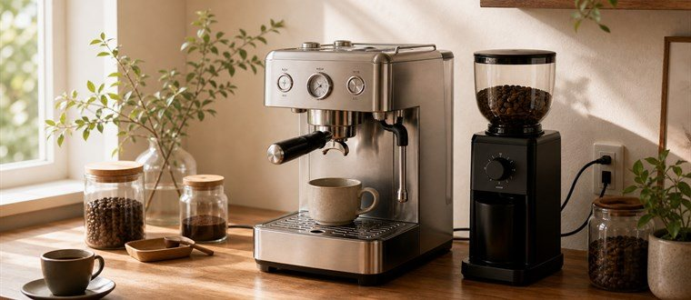

0
0제품 주변에 충분한 공간을 확보해 주세요.
제품 후면과 벽 사이 최소 10cm 이상 여유를 권장합니다.
설치 가이드
안전하고 완벽한 커피 한 잔을 위해 올바른 설치와 준비가 중요합니다. 아래 안내에 따라 쉽고 정확하게 설치해 보세요.01. 설치 전 확인하기
안전하고 효율적인 사용을 위해 설치 전 아래 항목을 확인해 주세요.

정격 전압 220-240V, 50/60Hz 콘센트를 사용해 주세요.
멀티탭 사용은 가급적 피해주세요.
제품이 수평으로 안정되게 놓여 있는지 확인해 주세요.
수평이 맞지 않으면 추출 압력에 영향을 줄 수 있습니다.
본체, 포터필터, 필터 바스켓 등 기본 구성품이 모두 포함되어 있는지 확인해 주세요.
02. 설치 순서 따라하기
아래 순서대로 진행하면 누구나 쉽게 설치할 수 있습니다.
제품 배치
평평하고 안정된 공간에 제품을 배치해 주세요.
전원 연결
전원 코드를 연결하고 전원 스위치를 켜주세요.
물 채우기
물탱크를 분리해 깨끗한 물을 MAX선까지 채워주세요.
초기 세척
물통을 장착한 후 온수 또는 스팀을 약 30초 이상 배출해 주세요.
테스트 추출
필터를 장착하고 테스트 추출로 정상 작동을 확인해 주세요.
03. 안전하게 사용하기
오래도록 안전하게 사용하려면 아래 사항을 꼭 지켜주세요.
주의사항
작동 중에는 고온 부위에 손을 대지 마세요. 사용 후에는 전원을 끄고 냉각 후 이동해 주세요.
케이블 정리
전원 케이블이 눌리거나 젖어지지 않도록 정리해 주세요.
물 사용 팁
매일 깨끗한 물로 교체하고, 석회질이 많은 지역은 정기적인 디스케일링을 권장합니다.
처음 사용 전 확인
모든 구성품이 올바르게 조립되었는지, 주변에 가연성 물질이 없는지 확인해 주세요.